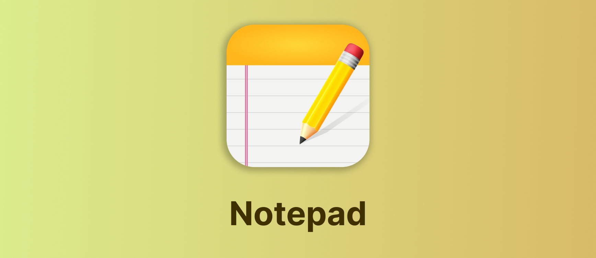
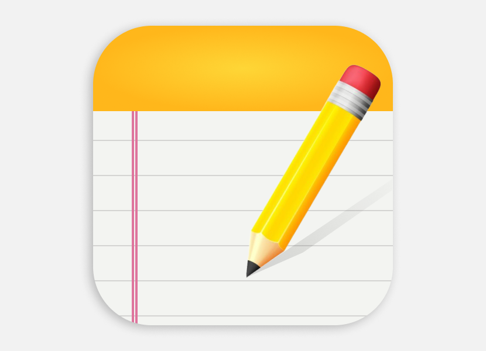
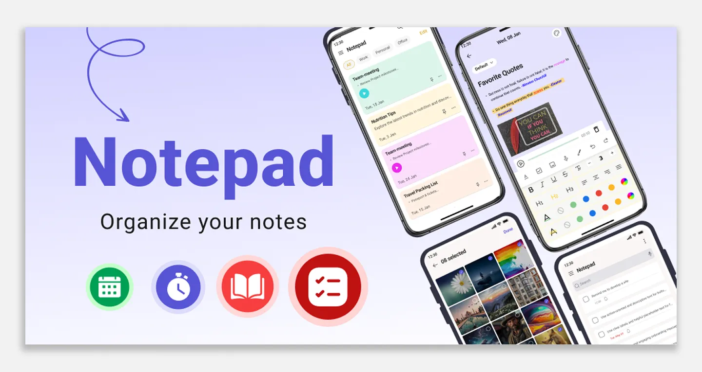
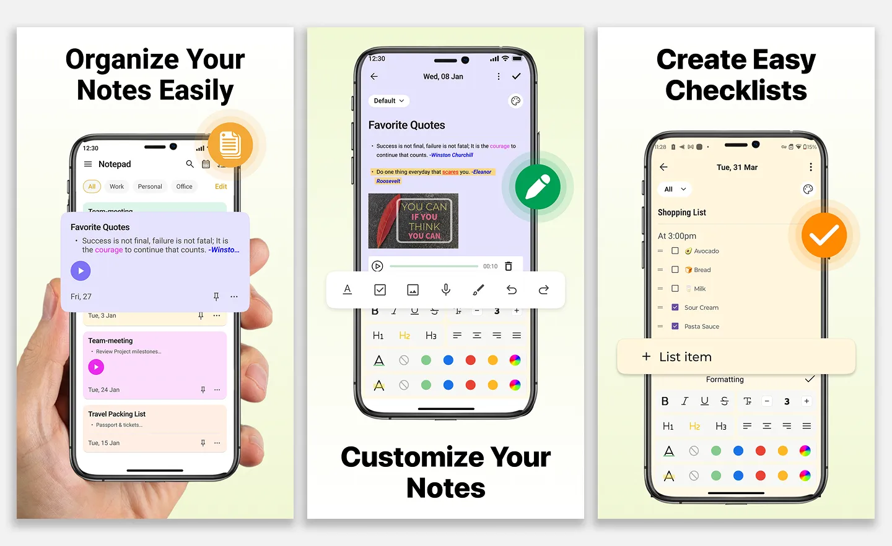
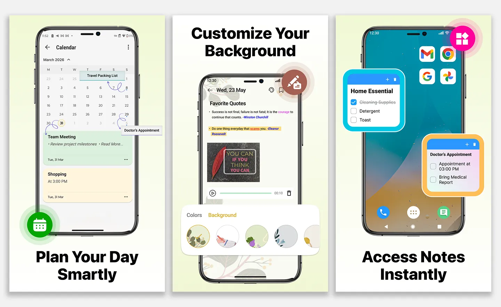
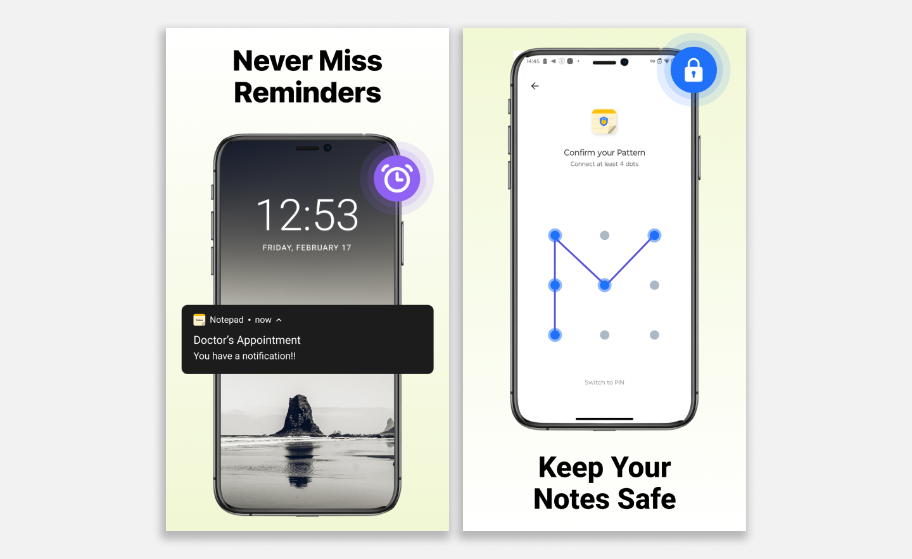

Notepad App
Clean note talking and reminder app
-
Role:
-
UI/UX Designer
-
Category:
-
Visual Design
-
Tools:
-
Figma
Photoshop
Project Overview
Notepad App is designed as a clean and minimal solution for capturing notes, voice recordings, and reminders efficiently.
App Icon Design

Play Store Feature Graphic

Play Store Screenshots



Design Approach
- Clean & minimal UI style
- Focus on readability
- Soft color palette
- Simple visual hierarchy
Final Outcome
Designed engaging and clean Play Store assets that effectively communicate the app’s core features and improve user attraction.